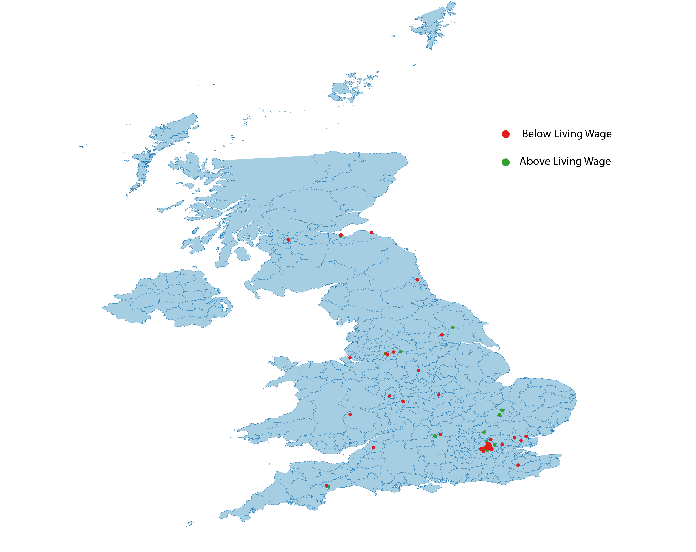
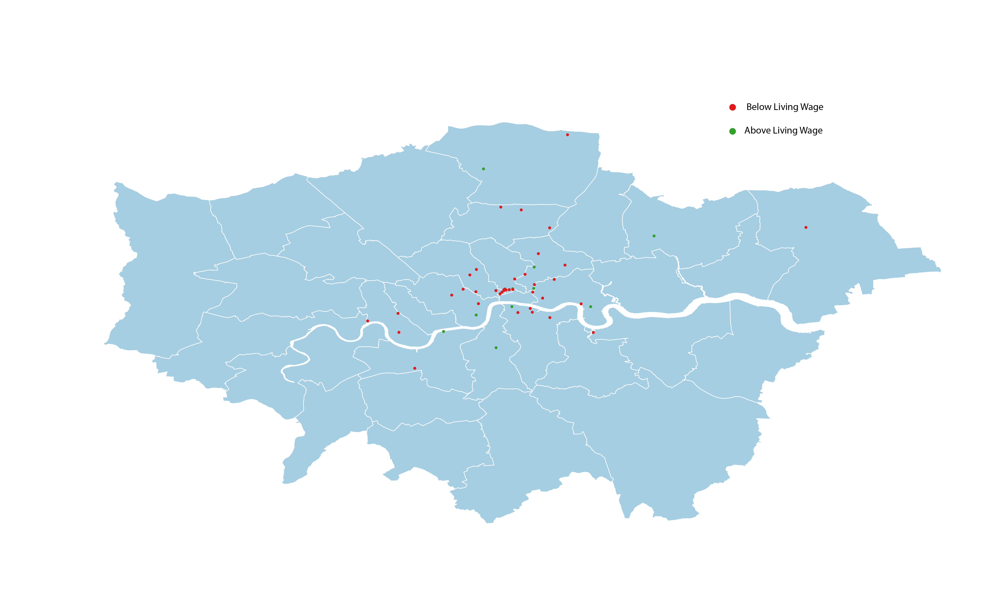
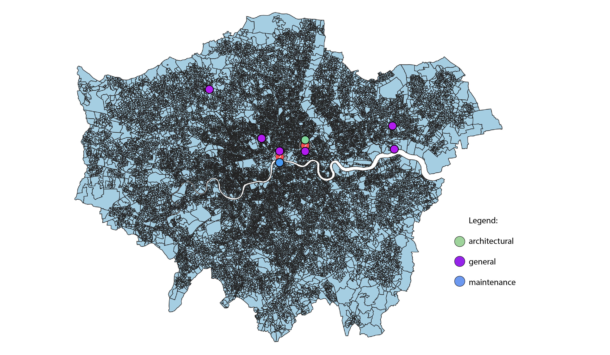

Salaries of Architectural Associates in the UK compared to Living Wage

Salaries of Architectural Associates in the London compared to Living Wage

Building Sector Trade Unions in London

The Path of Argument in Volume I of Marx's Capital, David Harvey.